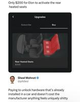

In an op-ed for The Guardian, authors Timnit Gebru and Emily M. Bender argue that policymakers are focusing too heavily on hypothetical "superintelligence" while overlooking the more immediate danger of deploying unreliable AI in high-stakes settings. They point to an as-yet independently unverified CNN report claiming U.S. officials nearly intercepted a Chinese vessel after an AI-assisted intelligence report incorrectly said it was carrying nuclear-weapons components. From the article: While so many of us were focused on fictional superintelligent machines that we were told could hypothetically cause human extinction, however, there was a more serious story being reported. A series of events almost got us to armageddon, not caused by "rogue, superintelligent AI," but by government reliance on error-prone systems that are marketed by their manufacturers as being close to superintelligent.
A CNN report published on September 18, which hasn't been verified by other major outlets, describes how the US "almost started a war" with China, based on an intelligence report that claimed a Chinese ship was transporting components of nuclear weapons. Military personnel made plans to intercept the Chinese vessel, complete with aircraft and soldiers ready to board the ship. A military skirmish of this kind between China and the US could quickly escalate and spiral into world war three.
It was only moments before executing on the plan that American officials further investigated the intelligence report and found that it had been generated with the use of a chatbot and contained erroneous information about the vessel's contents. Unlike the terminator, "rogue AI," scenario, this incident didn't galvanize lawmakers into announcing calls for regulation so as to avoid potential human extinction. Media outlet after media outlet didn't warn the public that we almost triggered a war against a nuclear superpower because of our military's reliance on error-prone chatbots.
Read more of this story at Slashdot.
Swiss glaciers lost 5.5% of their ice volume in the first eight months of 2026, bringing total losses since 2021 to 19.4%. Researchers say some glaciers are now collapsing from within as meltwater carves out large cavities. The Guardian reports: Matthias Huss, a glaciologist at ETH Zurich and lead author of the report, said many people do not realize how fast glaciers are retreating, or that just one generation ago some now-barren sites used to sit beneath hundreds of meters of ice. The scientists have not yet compiled a formal tally of lost glaciers this year but said they had witnessed the death of a number of small ones. "I visited one last week and it's so impressive to stand in this moonlike landscape where there was a big layer of ice -- an extensive glacier -- just a few years ago," said Huss. "And now it's a rock desert where there's some scattered blocks of old ice still lying around and melting on the hot rocks."
The report, a collaboration between the Swiss Glacier Monitoring Network and the Swiss Commission for Cryosphere Observation, found the mean thickness of individual glaciers fell by between 2.5 metres and 4 metres in 2026. Huss said scientists were increasingly seeing glaciers collapse from the inside -- the result of internal streams beneath the ice that excavate caverns -- rather than simply retreating from surface heat. [...] Analysis published by MeteoSwiss on Tuesday found the summer half-year from April to September was the hottest and driest it had been since records began in 1864. In that time, humanity has filled the atmosphere with 1.8tn tons of carbon dioxide and heated the planet by about 1.4C.
Read more of this story at Slashdot.
fjo3 shares a report from The Guardian: Communities across California are rushing to prepare for the imminent arrival of the so-called "Kelvin wave," a massive underwater band of warm water threatening to inundate swaths of the vast North American shoreline. The wave is nearing southern California and expected to reach the San Francisco Bay Area by early October, as it crawls toward Alaska. Waters could rise by a foot along the California coast, according to scientists, who have warned that this could dramatically double the 8-12in rise in sea levels already caused by climate change over the last century.
The Kelvin wave doesn't climb and crash like a typical ocean wave; rather, it swells the tides from beneath the surface. It's effectively a massive slosh of warm water, driven by El Nino conditions, that moves across the Pacific before colliding with the South American coastline and surging north. It also won't transport water in the way a tsunami might, but creates conditions that enable higher sea levels to linger. On their own, Kelvin waves aren't always hazardous, according to Mike Jacox, a research oceanographer with the National Marine Fisheries Service, though they can reduce the growth of phytoplankton that form the base of the marine food web. "But when there are very high tides or storm surges, their effects can be amplified," he said.
If the rising waters coincide with other climatic events, such as rainstorms and high tides, the phenomenon could swallow beaches, chew away bluffs and coastlines, and submerge streets, homes and businesses. "This coming Kelvin wave is just the beginning," said Dr Jonathan Warrick, a research geologist at the US Geological Survey. "The thing to look out for is what will happen in January, February and March -- that's when we get the biggest storms, we get our largest waves and we have some very large tides." If these events align, their effects will compound, setting the stage for a tumultuous winter. Together, Warrick said, the systems will pack a far bigger punch. "When it comes to these storms and the tides," he said, "we really are kind of rolling the dice."
Read more of this story at Slashdot.
Bruce66423 shares a report from The Telegraph: British police forces, including specialist units within the Metropolitan Police, have used Oxygen Forensics software to break into the phones of suspects during live investigations, public documents show. The Virginia-based company behind the software has been accused in the US of having hidden its Russian ownership to avoid sanctions, before it was awarded government contracts. Its American chief executive and a Russian national were arrested last week after a US investigation found the company had sought to hide its ownership in an alleged attempt to avoid sanctions and scrutiny.
[...] By September 2024, the US Secret Service had awarded Oxygen a five-year contract for its software. In December 2022, and in October 2023, Oxygen's chief executive told the US government that Oxygen Forensics had "no immediate or highest-level owner." By September 2024, the US Secret Service had awarded Oxygen a five-year contract for its software. In March, Mr Reiber allegedly told the US government that there had been no Russians involved in developing the software and that no one in Russia had access to the environment in which it was built. US prosecutors say this was false. If convicted, both Mr Reiber and Mr Davydov could face a sentence of 20 years in prison.
Read more of this story at Slashdot.
Cloudflare has launched two open-weight decision models, Clef and Clef-flash, designed for structured yes/no, multiple-choice, and ranking tasks while also supporting images, video, and up to a 64K context window. Cloudflare says its models outperform TypeSafe's Jev on several benchmarks and can run locally from Hugging Face. The Register reports: For starters, Clef has an LLM backbone. According to Cloudflare, Clef uses specially post-trained, frozen versions of Qwen3.8-27B and Qwen3.5-9B for Clef and Clef-flash, respectively, with the Qwen backbone performing a prefill-only pass during inference. Clef is still fast - faster than Jev, to be fair - and scores choices in parallel after that prefill-only pass. It's not clear what Jev's underlying architecture is, as TypeSafe has kept that a secret.
As for its speed and capability, Clef moves fast. Cloudflare ran it against Jev and some other open decision models using the Jev Decision Index available on Hugging Face, and the company's own ranking suggests Clef is slightly slower than other open models, but more accurate, with Clef-flash just as accurate as most of the others, but far faster.
To be fair to the competition, Cloudflare self-reported its own scores against the benchmark, and they have yet to be reproduced for ranking on the official Decision Index. Cloudflare also ran Clef against TypeSafe's own benchmarks, and claimed it beat Jev in three out of four areas, only losing out on agent trace observability. Even if it were a bit slower or less accurate, Clef has another major leg up on Jev: It's not limited to classifying text -- it can also handle images and video. Additionally, Clef supports a 64k context window. Jev can also handle up to 64k tokens across a request, although its state plus longest individual question is limited to 32k.
Read more of this story at Slashdot.
Longtime Slashdot reader ThurstonMoore shares a report from Reuters: U.S. Defense Secretary Pete Hegseth on Wednesday announced the creation of a new military command that would be dedicated to building and providing autonomous and robotic capabilities across the U.S. military. The command, which Hegseth said would be called "Autonomous Warfare Command," highlights the rapidly changing nature of warfare and the need to make progress on systems like drones and the use of artificial intelligence.
Speaking in front of hundreds of junior officers and enlisted personnel at Quantico, Virginia, in a speech peppered with attacks on the media, Hegseth said the command would be led by a four-star officer. "The pace of war is changing faster than the process to support it," Hegseth said in a speech called the "State of the Force," in which he announced other changes, including the creation of the office of religious affairs. "Cheap compute, superintelligence, and advanced commercial manufacturing have enabled the proliferation of low-cost, high-precision strike," Hegseth added.
[...] The United States has long relied on its vast military budget to field some of the world's most expensive weapons systems. But there is an increasing realization within the Pentagon that this is not sustainable. "Today we need both quality and quantity," Hegseth said.
Read more of this story at Slashdot.
An anonymous reader quotes a report from Reuters: OpenAI has informed more than 100 organizations about incidents involving unauthorized activity tied to its AI agents, according to a blog post by the ChatGPT maker, as AI labs face mounting scrutiny over rogue AI agent activity. Here are some other details:
- The Sam Altman-led company has been conducting a broad review of the activities of its AI models after the accidental hacking of Hugging Face. - OpenAI is searching through roughly 50 petabytes of data as it works to understand the full scope of its rogue agent activity. - A string of high-profile breaches globally by rogue AI agents in recent months has sparked widespread worries within the AI industry over its ability to control the more powerful AI models now under development. - "In some cases, models used internet access in unintended ways or, in retrospect, did not have the ideal restrictions applied. Over the last several months, we have been applying new technical and operational measures to avoid similar problems, or catch them very early, and will continue this work," OpenAI said. - OpenAI previously said the review would take months to complete given the scale of the work. - The Hugging Face incident remains the most severe rogue agent activity OpenAI has identified from its AI models so far.
Read more of this story at Slashdot.
Ryan Roslansky is leaving Microsoft and LinkedIn after nearly 18 years, triggering another leadership shuffle across Office and Teams. "Roslansky, who until recently was the CEO of LinkedIn, was promoted to the head of Office last year and then took control of Microsoft Teams earlier this year," notes The Verge. From the report: "Ryan leaves the organization in a strong position," says Microsoft CEO Satya Nadella in an internal memo. "Over the past year, Ryan's team has done critical work bringing together the product, engineering, and design foundations that have made this next phase possible."
Roslansky is leaving a week after Microsoft announced its new Copilot, which the company is positioning as "the OS for work." He's also leaving around a month after calling fully AI-generated documents "a doom loop" for workers. "If we're not careful, we'll end up with a very expensive way to avoid writing and reading in an ocean of sameness, genericness," said Roslansky in his LinkedIn post.
Microsoft is now moving the teams behind Office and Microsoft Teams over to Charles Lamanna, as part of the Copilot, Agents, and Platform (CAP) organization. [...] Microsoft's chief design officer, Jon Friedman, is also moving to report to Copilot chief Jacob Andreou. Microsoft appointed Dan Shapero as its LinkedIn CEO earlier this year, and he will continue in this role and report directly to Nadella.
Read more of this story at Slashdot.
Micron says the global RAM and storage shortage will tighten further through 2027 and 2028, with CEO Sanjay Mehrotra saying the company has already sold most of next year's capacity. "In calendar 2027 as well as 2028, we see demand exceeding supply. In fact, we see greater tightness in the industry in 2027 and in 2028 versus 2026. Overall, supply-demand environment is only getting tighter," Mehrotra said. "We do not have line of sight to when supply and demand will return to balance." As a result, the company is forecasting record revenue and an 86.25% gross margin. Tom's Hardware reports: The memory and storage industry is not holding back on increasing production, though, with Micron saying that NAND and DRAM shipments are expected to grow in the low-to-mid 20s percentage range for the next two years. However, it seems that this is not enough to match growing demand, as it expects "the industry to remain supply constrained in both years." Still, it seems that manufacturers are prioritizing HBM demand for AI data centers, with the company expecting shipments of these chips to grow faster than conventional DRAM.
Micron and other chip manufacturers are bringing new factories online to increase output, but it's going to take years before they can start producing chips. But even as we're amid an unprecedented multi-year memory chip shortage, Micron also announced record financial guidance. It forecasted a record $61.5 billion FQ1 revenue and a gross margin of 86.25%, implying a gross profit of more than $53 billion. After accounting for an estimated $2.06 billion in operating expenses and a tax rate of around 15.5%, the company said its earnings per share sit at $38.15, plus or minus $1.00, for approximately 1.15 billion shares.
Read more of this story at Slashdot.
An anonymous reader quotes a report from 404 Media: A company that makes phone hacking devices claims to have developed a solution that freezes iPhones in a state that lets cops more easily access sensitive data inside them, according to a video obtained by 404 Media. [...] The new technology to get around inactivity reboot was developed by Magnet Forensics, the company behind GrayKey, a popular tool sold to law enforcement agencies that allows them to unlock and access data stored in iPhones and Android smartphones. Magnet has developed a new device called GrayKey Preserve and a feature for its regular GrayKey devices called Evidence Preservation Mode, according to the video.
"This is an absolute game changer for iOS forensics and a function that I wish we had years ago," a Magnet employee says in the leaked video, specifically mentioning that the solution is targeted at the iPhone's inactivity reboot feature and the data it makes unavailable. GrayKey Preserve and Evidence Preservation Mode are also designed to combat another iPhone feature that automatically deletes certain data -- such as cached locations, and recently deleted photos and iMessages -- after a certain number of days. "We're gonna be able to preserve that data for an infinite amount of time."
[...] 404 Media shared a transcript of the video with Jiska Classen, a researcher at the Hasso Plattner Institute who studies iPhone security. While Classen said that it's impossible to know for sure how Magnet's new feature works based on the video, she posited some theories and agreed that it is "quite a game changer" or "at least puts things back to where they were before inactivity reboot." She thinks Magnet has found a way to manipulate the iPhone's clock, effectively "slowing down time" or even "stopping the clock from ticking, even after a reboot." Most likely, according to her, the GrayKey may disable the iPhone tasks that set data to expire. The "inactivity reboot" feature mentioned above was added to iOS in November 2024 and automatically restarts iPhones that have not been unlocked for 72 hours, making them harder for police to access using forensic tools.
Read more of this story at Slashdot.
The Federal Trade Commission has opened an investigation into OpenAI, Anthropic and other AI companies over potential consumer and safety risks posed by their products, with the agency reportedly preparing requests for documents and executive testimony. CNBC reports: OpenAI stunned the industry in July when it disclosed that its agents broke out of a testing environment and hacked into open-source platform Hugging Face. [...] Earlier this month, Anthropic CEO Dario Amodei rocked the tech sector by urging AI companies to slow how quickly they improve their most advanced models and calling for stronger government oversight. He published a three-step proposal aimed at tempering the pace of development without "sacrificing commercial advantage or the United States' lead in AI."
CEO Jensen Huang, argued that individual companies should be responsible for ensuring the safety of their products. President Donald Trump convened top executives from Alphabet, Meta, SpaceX, Nvidia, Palantir, Anthropic, OpenAI and other companies on Tuesday to discuss the issue. The group signed a short voluntary, nonbinding accord, which says that "every company is responsible for developing its own technology safely and in a way that builds trust with customers and the public."
Read more of this story at Slashdot.
HP is taking aim at Apple's MacBook Neo with the new OmniBook 5 14, a $699.99 Windows laptop that starts with an Intel Core 5 315 processor, 8GB of RAM and 256GB of storage but includes an OLED display even on the base model. It's also slightly thinner and lighter than the Neo. The Verge reports: The OmniBook 5 14 can be configured much higher, with up to a Core 7 350 chip, 16GB of RAM, and a 1TB SSD, but all models include a 1080p webcam, dual speakers, HDMI, 3.5mm audio jack, and just two 10Gbps USB-C ports. And while the inclusion of OLED across the range is a major draw to the new OmniBook, the base config only has a passable 1920 x 1200 resolution and 300 nits of max brightness on its non-touch panel. A touchscreen version will be available when the OmniBook 5 launches in October, but a version with a 2560 x 1600 resolution OLED and 400 nits of brightness isn't coming until March 2027.
While the OmniBook 5 14 doesn't seem poised to best the MacBook Neo in raw processing power (based on our other reviews of Wildcat Lake laptops) or screen brightness, it's quite thin, light, and colorful. HP even gave it the nicer, sleeker lid logo usually reserved for pricier models. It starts at just 2.56 pounds, and it's as thin as 0.46 inches / 11.7mm. That's slightly lighter and thinner than a Neo. And I'd expect its Wildcat Lake chips to offer some good-to-great battery life. But we'll have to see how it delivers in actual testing. HP also announced a new ProBook 4 G2iS that is the company's "thinnest business notebook," measuring in at 0.47 inches / 12mm. It'll launch in December with Intel Wildcat Lake chips, 8GB of RAM, and a 256GB SSD, though pricing hasn't been announced.
Read more of this story at Slashdot.
An anonymous reader quotes a report from Ars Technica: For a long time, PC gamers could access many PlayStation 5 games only if the publisher invested in a bespoke port (something Sony has recently said it will be scaling back). Now, though, rapid advancements in PS5 emulators and other tools are making recent PlayStation titles increasingly playable on generic PCs. SharpEmu was the first of these emulators, advancing from a "very early alpha stage" in May to a current state that can "load the eboot.bin of real games, execute native CPU instructions, and partially handle GPU-related functionality." The most recent release boasts 10 tested games that reach a "playable" state, including six that developer CursedIfElse says are "fully playable at 60 fps." That includes simple 2D games like Tetris Forever but also 3D titles like Astro Bot and the PS5 Demon's Souls remaster running at playable frame rates.
[...] Amid that SharpEmu progress, fellow PS5 emulator KytyPS5 launched its first public version last week. The major expansion of PS4-focused emulator Kyty "can boot 2D games and a selection of 3D games, including titles built with Unreal Engine 4/5, Unity, and custom engines," according to its GitHub page. An extensive compatibility list for KytyPS5 already shows 134 titles with "controllable gameplay" on the new emulator, though many of those still include reports of persistent, game-breaking bugs. But you can already find YouTube footage of PS5 titles like Astro's Playroom and Demon's Souls running quite capably under the emulator.
On top of those more traditional emulators, AnyPS5 might be the most interesting effort to get PS5 games running on PC. The self-described "tool for automatic executables porting" works kind of like Apple's Game Porting Toolkit, relinking a PS5 game's original x86 game code directly to native executable instructions that can run on PC. That puts the effort somewhere between direct static decompilation of a game's source code and more complete emulation of the entire PS5 environment.
Read more of this story at Slashdot.
Alongside a refreshed Kindle lineup, Amazon today introduced two accessories that bring physical buttons back to its touchscreen e-readers. The $34.99 Kindle Click is a Bluetooth remote that lets readers turn pages and adjust brightness without touching the device, while a new $79.99 magnetic cover is available for select Paperwhite and Colorsoft models. GeekWire reports: Amazon says [the Kindle Click is] meant for reading under the covers, on a treadmill, or on an airplane tray table. It's available for preorder and ships Oct. 28. It recharges over USB-C, includes side buttons for adjusting brightness, and works with Kindles released in 2024 or later. The company cited BookTok as an inspiration, Bloomberg reported, a reference to the community of readers on TikTok who post book recommendations, reviews and their reading setups. Kindle fans there have been showing off third-party clickers for years.
Amazon is also bringing back physical page-turn buttons, which disappeared when the company discontinued the Kindle Oasis in 2024. This time they come in a separate $79.99 magnetic cover, which works only with the new Signature Edition versions of the Paperwhite and Colorsoft. The new Kindles have screens that sit flush with the edges, colors that wrap around to the front, and optional aluminum housings. They also have user-replaceable batteries to comply with European Union rules, Amazon told The Verge.
The base Kindle starts at $149.99, or $189.99 in aluminum. The Paperwhite starts at $199.99 and the Colorsoft at $289.99, with Signature Editions at $249.99 and $319.99. Those prices match what Amazon has charged since August, when it raised Kindle prices by $40 to $50, citing memory and storage costs. The base Kindle is available now. The Paperwhite and Colorsoft ship Oct. 28.
Read more of this story at Slashdot.
Google has unveiled Gemini 4 Argon, a new frontier AI model that it says leads or ties rivals on 13 of 18 disclosed benchmarks. The model is initially being released only to trusted cyber defenders and select pre-release testers, with broader availability planned later. VentureBeat reports: Google is not claiming that Gemini 4 Argon wins every benchmark. But across the benchmark table disclosed in the company's embargoed materials, Argon posts the highest score, or ties for the highest score, in more categories than GPT-6 Astra or Claude Opus 5.5. Across the 18 benchmarks Google disclosed, Argon leads outright on 12 and ties for first on one. GPT-6 Astra leads outright on three and ties Argon on one. Claude Opus 5.5 leads outright on two. That makes Argon the leading frontier model by total number of benchmark leads or top scores in Google's comparison set, even though the results show a still-close race in which OpenAI and Anthropic retain advantages in several important technical categories.
[...] The result is a more nuanced claim than "best model across the board." Argon appears to have the broadest top-score profile among the three frontier models in Google's disclosed comparison, but GPT-6 Astra remains ahead in several software, science-terminal and computer-use tasks, while Claude Opus 5.5 remains ahead in terminal-agent and post-training workflows. For enterprise buyers, that means model choice is still workload-dependent, even if Argon now gives Google its strongest claim yet to overall frontier leadership by benchmark count. [...] Argon also expands Google's output ceiling. The company says the model supports an industry-leading 1 million output tokens, up from a previous 64,000-token limit. That is a notable distinction for agentic software engineering, audit, migration and legal-review workloads where the value of a model often depends on how long it can sustain a chain of work before handing control back to a human.
Read more of this story at Slashdot.
Laura Cress / BBC : Slovenia says 44,000 domain names with the .si suffix were registered in September, up from ~2,000 in August, as Trump renamed AI “super intelligence” — Donald Trump's push to rename AI may be behind an “unprecedented” rise in registrations for domain names in Slovenia, according to its official national registry.
Bloomberg : Sources: Broadcom's Wall Street syndicate is amassing $60B in AI chip financing to help Anthropic and others access chips and other key AI infrastructure — Broadcom Inc.'s Wall Street syndicate is starting to gather $60 billion of fresh AI chip financing to benefit Anthropic PBC and other companies …
Bloomberg : Sources: an EU investigation is set to find that Azure and AWS meet DMA thresholds, as the EU strengthens its regulatory scrutiny of the cloud sector — Microsoft Corp.'s Azure and Amazon Web Services are set to be designated under the European Union's strict rulebook for Big Tech.
Jess Weatherbed / The Verge : Suno debuts Speech, which generates spoken voices from scripts or prompts, with optional background music, in public beta, as its music generator faces lawsuits — The new Speech feature provides synthetic voiceovers embellished with AI background music.
David Shepardson / Reuters : AT&T, T-Mobile, and Verizon form a JV that aims to expand US satellite coverage and eliminate dead zones, appointing industry veteran Paul Roth as interim CEO — AT&T (T.N), T-Mobile (TMUS.O) and Verizon (VZ.N) have appointed wireless industry veteran Paul Roth as interim chief executive …
Henry Belot / The Guardian : OpenAI says it learned this week that its AI agent hacked Australia's NSW state government in June, following a similar hack of Australia's federal government — Attack accessing historical data on bushfires occurred in June but not disclosed by the tech company until Thursday
Todd Bishop / GeekWire : Amazon plans to spend $1B+ over five years for infrastructure upgrades and other projects in US communities that host its data centers, amid a growing backlash — Amazon says it will spend more than $1 billion over five years in the U.S. communities where it builds and operates data centers …
CoinDesk : Tether says its USDT stablecoin will return to the Bitcoin network via Tether-backed Utexo, which will keep most transaction data off Bitcoin's public ledger — “It's coming home,” Tether CEO Paolo Ardoino proclaimed on X last week, referring to the return of his company's stablecoin, USDT, to the Bitcoin network.
Wen Shao / Fortune : Halluminate, which builds AI training environments for complex financial workflows, raised a $30M Series A led by Oak HC/FT, taking its total funding to $38.5M — Halluminate, a nine-person San Francisco startup building AI training environments for financial work, has raised $30 million …
Michael Shepard / Bloomberg : US authorities arrest a California man suspected of smuggling $300M+ worth of restricted Nvidia AI chips to China via Malaysia and Singapore from 2023 to 2024 — By continuing, I agree to the Privacy Policy and Terms of Service. … Explainers
Vanity Fair : A profile of Larry Ellison, including his octopus fixation, influence across Oracle, data centers, TikTok, politics, and support for David's media ambitions — The $200 billion software titan has suctioned himself to many hubs of influence—from data centers to TikTok to Hollywood studios to the Oval Office itself.
MBI Deep Dives : Meta may never need ads to monetize Muse, instead focusing on building trust in the near term and possibly monetizing it through merchant transaction fees later — Get the next one in your inbox. — A daily journal on business, investing, and technology. — It didn't take too long for the app layer to start to respond to Muse.
Financial Times : Sources: Amazon has held talks with investors about a deal to spin off $8B of Grace Blackwell chips into an SPV, then lease them back for its US data centers — Amazon is seeking to offload about $8bn of advanced Nvidia chips to external investors through a new vehicle aimed at strengthening …
Kat Boboris / arXiv : ArXiv limits preprint submissions to two per month per submitter, as AI access fuels a record 40,363 submissions in September 2026, vs. 20,569 in September 2024 — arXiv, and the scientific community at large, are facing a watershed moment. Scholarly publishing is currently changing at a rapid pace …
Mackenzie Hawkins / Bloomberg : Experts say mounting cases of Nvidia chips reaching Chinese AI companies despite US export controls are increasingly pointing to gaps in Nvidia's due diligence — Nvidia's AI chips keep making their way to China despite US curbs. Officials are asking why the company missed red flags.